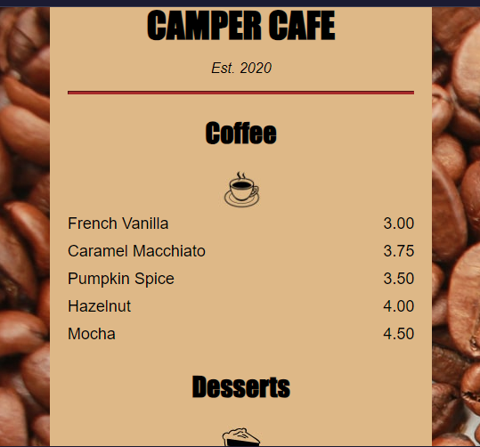
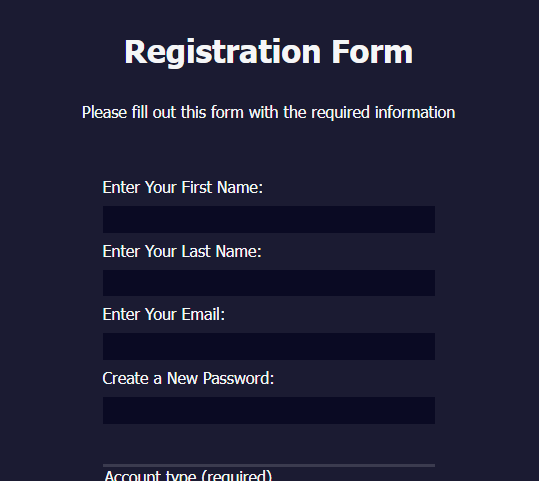

Faith Ngozi
Onwuemeri
HI!! LOOKING FOR A WEB DEVELOPER?
Welcome!!
Transforming ideas into stunning websites!
Curious about my work? Take a peek at my resume!
Ready to take your website to the next level?
Contact me now, and let's get started!
WEB
DEVELOPER
Hello! I'm Faith, a passionate web developer with a knack for creating innovative and user-friendly websites. Seeking an entry-level position to leverage my technical skills and contribute to a dynamic team. With a strong background in programming, problem-solving skills, a passion for developing efficient scalable software solutions and a keen eye for design, I strive to deliver high-quality web solutions that meet the needs of my clients.
Professional Background
With a strong foundation in Web developing principles and a passion for innovative technology, I have dedicated myself to crafting dynamic and responsive websites. My freelance journey began with a focus on web development, where I specialized in HTML, CSS, and JavaScript to create user-friendly interfaces. My recent projects include: Developing a therapy-themed survey form that aims to enhance user experience and data collection efficiency. Designing visually appealing websites with a preference for red and black color schemes to align with my clients' branding needs. Assisting clients with CSS and website styling to ensure their online presence is both professional and engaging. As I prepare to further my education in software engineering, I am also exploring the realm of Human-Robot Interaction. My goal is to integrate my web development expertise with my interest in robotics, creating seamless interactions between humans and robots. Whether it's through gaming, physical activities, or nature exploration, I envision a future where robots can coexist and feel alongside humans.
Technical Skills
- Programming Languages: Python, CSS, HTML, Java
- Web Frameworks: Django, Flask
- Databases: SQL
- Tools: Git, GitHub, Jupyter Notebook, VS Code
- Libraries: Pandas, NumPy, Matplotlib, BeautifulSoup
Philosophy and Approach
I believe in writing clean, efficient code and creating intuitive user experiences. My approach to web development is rooted in understanding the client's vision and translating it into a functional, visually appealing website.
Certifications
- Python Full Stack (Simplilearn)
- Getting Started with Full Stack Java Programming (Simplilearn)
- DevSecOps Course (Google Cloud)
- DevOps Course (Google Cloud)
Portfolio Highlights
-
CAFE MENU
The Cafe Menu project is a dynamic and responsive web application designed to showcase the offerings of a local cafe. This project features a visually appealing layout that displays the cafe's menu items, including categories like beverages, breakfast, lunch, and desserts. Each menu item includes a description, price, and an appetizing image. This project aims to enhance the customer experience by providing an accessible, attractive, and easy-to-navigate digital menu, ultimately boosting customer engagement and satisfaction.
-
USER REGISTRATION FORM
The User Registration Form project is a web-based application designed to facilitate the user sign-up process for a website or service. This project aims to create an intuitive, secure, and responsive registration form that collects essential user information, validates the input, and stores the data in a database. The User Registration Form project delivers a robust and efficient solution for user registration, enhancing the user experience while ensuring data integrity and security. It can be integrated into various web applications, providing a reliable way to manage user sign-ups and account creation.
Professional Timeline
-
2023
Graduated with Secondary School Leaving Certificate Exam (SSCE).
Relevant Coursework: Mathematics, English, Computer Science, Data Science, Physics, Chemistry.
-
2024
Acquired Javascript, DevOps and Python Certificate
-
2023
Started my first career as a freelancer
Hobbies
- Gaming
- Nature Exploration
- Physical Activities
Discover My Journey and Expertise
Hello! I'm Faith Ngozi Onwuemeri, a passionate web developer dedicated to transforming ideas into stunning, user-friendly websites. I invite you to explore my resume to gain insights into my professional background, technical skills, and the projects that showcase my abilities.
Contact Me
Have a question or want to work together? I'd love to hear from you!
Privacy Note: Your privacy is important to me. Any information you provide will be kept confidential and used solely to respond to your inquiry.
Camera Section
Me at work
As a web developer, I approach my work with a blend of passion, curiosity, and meticulous attention to detail. I am constantly driven by a desire to learn and keep up with the latest trends and technologies in the web development landscape. This mindset not only helps me stay updated but also allows me to bring innovative solutions to the projects I work on.
Problem-solving skills
I pride myself on my problem-solving skills and my ability to break down complex challenges into manageable tasks. I believe in writing clean, efficient, and maintainable code, and I understand the importance of thorough testing and documentation to ensure the reliability and longevity of my work.
Goal
Ultimately, my goal is to create user-centric, high-performance web applications that not only meet but exceed client expectations. I am dedicated to continuous improvement and am always looking for ways to enhance my skills.
Collaboration
Collaboration is a cornerstone of my work ethic. I enjoy working in a team environment where ideas are freely exchanged, and I communicate effectively to ensure everyone is on the same page. I am open to feedback and always willing to provide assistance to my colleagues.
Goal
By focusing on effective communication, collaborative problem-solving, respect and support, shared objectives, responsibility and accountability, and continuous improvement, I contribute to a positive and productive team environment. This approach helps ensure the successful development and implementation of the new feature while fostering a strong, collaborative team dynamic.
Me with friends
By setting clear boundaries, prioritizing tasks, managing time effectively, communicating openly, engaging in self-care, and planning activities around work, I achieved a healthy balance between work, personal life, and friendships. This approach ensures that I remain productive and fulfilled in both my professional and personal life.
Goal
The overarching goal is to create a balanced lifestyle where I effectively manage my professional responsibilities while nurturing and enjoying my friendships. This balance leads to a fulfilling and well-rounded life, where both work and personal relationships contribute to my overall satisfaction and happiness.